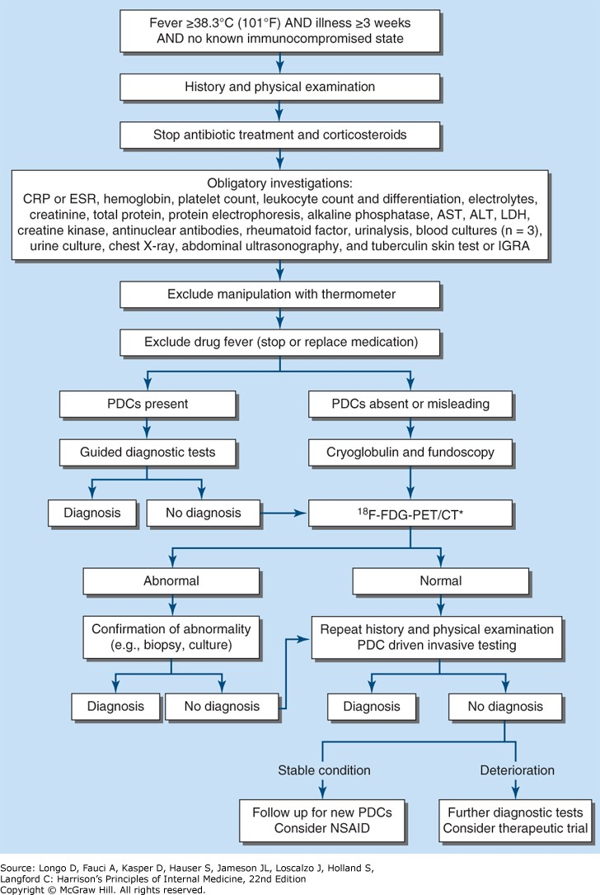

<!DOCTYPE html>
<html lang="en">
  <head>
    <meta charset="utf-8" />
    <meta name="viewport" content="width=device-width, initial-scale=1.0, maximum-scale=1.0, user-scalable=no" />

    <title>發燒之生理病理、評估及處置</title>
    <link rel="stylesheet" href="dist/reveal.css" />
    <link rel="stylesheet" href="dist/theme/solarized.css" id="theme" />
    <link rel="stylesheet" href="plugin/highlight/zenburn.css" />
	<link rel="stylesheet" href="css/layout.css" />
	<link rel="stylesheet" href="plugin/customcontrols/style.css">

	<link rel="stylesheet" href="plugin/reveal-pointer/pointer.css" />


    <script defer src="dist/fontawesome/all.min.js"></script>

	<script type="text/javascript">
		var forgetPop = true;
		function onPopState(event) {
			if(forgetPop){
				forgetPop = false;
			} else {
				parent.postMessage(event.target.location.href, "app://obsidian.md");
			}
        }
		window.onpopstate = onPopState;
		window.onmessage = event => {
			if(event.data == "reload"){
				window.document.location.reload();
			}
			forgetPop = true;
		}

		function fitElements(){
			const itemsToFit = document.getElementsByClassName('fitText');
			for (const item in itemsToFit) {
				if (Object.hasOwnProperty.call(itemsToFit, item)) {
					var element = itemsToFit[item];
					fitElement(element,1, 1000);
					element.classList.remove('fitText');
				}
			}
		}

		function fitElement(element, start, end){

			let size = (end + start) / 2;
			element.style.fontSize = `${size}px`;

			if(Math.abs(start - end) < 1){
				while(element.scrollHeight > element.offsetHeight){
					size--;
					element.style.fontSize = `${size}px`;
				}
				return;
			}

			if(element.scrollHeight > element.offsetHeight){
				fitElement(element, start, size);
			} else {
				fitElement(element, size, end);
			}		
		}


		document.onreadystatechange = () => {
			fitElements();
			if (document.readyState === 'complete') {
				if (window.location.href.indexOf("?export") != -1){
					parent.postMessage(event.target.location.href, "app://obsidian.md");
				}
				if (window.location.href.indexOf("print-pdf") != -1){
					let stateCheck = setInterval(() => {
						clearInterval(stateCheck);
						window.print();
					}, 250);
				}
			}
	};


        </script>
  </head>
  <body>
    <div class="reveal">
      <div class="slides"><section  data-markdown><script type="text/template"><!-- .slide: class="drop" -->
<div class="" style="position: absolute; left: 0px; top: 0px; height: 900px; width: 1600px; min-height: 900px; display: flex; flex-direction: column; align-items: center; justify-content: center" absolute="true">

# 發燒之生理病理、評估及處置

From [Harrison's Principles of Internal Medicine, 22nd Edition](https://accessmedicine.mhmedical.com/book.aspx?bookid=3541#292052509), Chapter 20-22
</div></script></section><section  data-markdown><script type="text/template"><!-- .slide: class="drop" -->
<div class="" style="position: absolute; left: 0px; top: 0px; height: 900px; width: 1600px; min-height: 900px; display: flex; flex-direction: column; align-items: center; justify-content: center" absolute="true">

<!-- .slide: class="drop" -->
<div class="" style="position: absolute; left: 0px; top: 0px; height: 900px; width: 1600px; min-height: 900px; display: flex; flex-direction: column; align-items: center; justify-content: center" absolute="true">

# Q&A
</div></div></script></section><section  data-markdown><script type="text/template"><!-- .slide: class="drop" -->
<div class="" style="position: absolute; left: 0px; top: 0px; height: 900px; width: 1600px; min-height: 900px; display: flex; flex-direction: column; align-items: center; justify-content: center" absolute="true">

<!-- .slide: class="drop" -->
<div class="" style="position: absolute; left: 0px; top: 0px; height: 900px; width: 1600px; min-height: 900px; display: flex; flex-direction: column; align-items: center; justify-content: center" absolute="true">

## 體溫由什麼部位控制？
</div></div></script></section><section  data-markdown><script type="text/template"><!-- .slide: class="drop" -->
<div class="" style="position: absolute; left: 0px; top: 0px; height: 900px; width: 1600px; min-height: 900px; display: flex; flex-direction: column; align-items: center; justify-content: center" absolute="true">

<!-- .slide: class="drop" -->
<div class="" style="position: absolute; left: 0px; top: 0px; height: 900px; width: 1600px; min-height: 900px; display: flex; flex-direction: column; align-items: center; justify-content: center" absolute="true">

## 哪些因素會影響正常體溫？
</div></div></script></section><section  data-markdown><script type="text/template"><!-- .slide: class="drop" -->
<div class="" style="position: absolute; left: 0px; top: 0px; height: 900px; width: 1600px; min-height: 900px; display: flex; flex-direction: column; align-items: center; justify-content: center" absolute="true">

## 發燒的定義是什麼？
</div></script></section><section  data-markdown><script type="text/template"><!-- .slide: class="drop" -->
<div class="" style="position: absolute; left: 0px; top: 0px; height: 900px; width: 1600px; min-height: 900px; display: flex; flex-direction: column; align-items: center; justify-content: center" absolute="true">

<!-- .slide: class="drop" -->
<div class="" style="position: absolute; left: 0px; top: 0px; height: 900px; width: 1600px; min-height: 900px; display: flex; flex-direction: column; align-items: center; justify-content: center" absolute="true">

## 為什麼會發燒？
</div></div></script></section><section  data-markdown><script type="text/template"><!-- .slide: class="drop" -->
<div class="" style="position: absolute; left: 0px; top: 0px; height: 900px; width: 1600px; min-height: 900px; display: flex; flex-direction: column; align-items: center; justify-content: center" absolute="true">

<!-- .slide: class="drop" -->
<div class="" style="position: absolute; left: 0px; top: 0px; height: 900px; width: 1600px; min-height: 900px; display: flex; flex-direction: column; align-items: center; justify-content: center" absolute="true">

## 發燒一定要吃退燒藥嗎？
</div></div></script></section><section  data-markdown><script type="text/template"><!-- .slide: class="drop" -->
<div class="" style="position: absolute; left: 0px; top: 0px; height: 900px; width: 1600px; min-height: 900px; display: flex; flex-direction: column; align-items: center; justify-content: center" absolute="true">

## 什麼樣的人需要退燒？
</div></script></section><section  data-markdown><script type="text/template"><!-- .slide: class="drop" -->
<div class="" style="position: absolute; left: 0px; top: 0px; height: 900px; width: 1600px; min-height: 900px; display: flex; flex-direction: column; align-items: center; justify-content: center" absolute="true">

## 人體體溫由下視丘控制

- 下視丘的前視區與後視區的神經元接受兩種訊號：
	- 來自周邊神經的訊號，這些神經傳遞<mark>皮膚</mark>中溫度受器的資訊
	- 灌流下視丘的<mark>血液</mark>溫度
- 下視丘的體溫調節中樞整合這兩種訊號來維持正常體溫
- 在中性溫度環境下，人類的代謝率會產生足夠的熱量來維持核心體溫在 <mark>36.5–37.5°C</mark>（97.7–99.5°F）之間
- 儘管外在環境變化，下視丘的體溫調節中樞能夠平衡<mark>肌肉和肝臟</mark>的代謝活動所產生的過多熱量，並透過<mark>皮膚和肺部</mark>散熱來維持正常體溫
- 根據超過35,000名年齡≥18歲的個體研究，平均口腔溫度為36.6°C（95%信賴區間：35.7–37.3°C）
	- 基於此研究，<mark>口溫超過37.7°C（99.9°F）</mark>，代表健康人群中的第 99 百分位，定義為發燒
</div></script></section><section  data-markdown><script type="text/template"><!-- .slide: class="drop" -->
<div class="" style="position: absolute; left: 0px; top: 0px; height: 900px; width: 1600px; min-height: 900px; display: flex; flex-direction: column; align-items: center; justify-content: center" absolute="true">

## 影響體溫的其他因素

- 較高的<mark>環境溫度</mark>會導致較高的基礎體溫
- 晝夜節律與季節變化：
	- 早上8點與夏季溫度較低
	- 下午4點與冬季溫度較高
- 年齡：每增加10歲，體溫降低0.02°C
- 族群：非裔女性體溫比白人男性高0.052°C
- 共病：<mark>癌症</mark>患者高0.02°C、<mark>甲狀腺</mark>功能低下則低0.01°C
- 月經週期：排卵前兩週早上溫度較低，排卵後上升約**0.6°C**，並維持至月經來臨
- 控制年齡、性別、種族、生命徵象與共病後，基礎體溫增加0.15°C（或一個標準差），會導致1年死亡率絕對增加0.52%
</div></script></section><section  data-markdown><script type="text/template"><!-- .slide: class="drop" -->
<div class="" style="position: absolute; left: 0px; top: 0px; height: 900px; width: 1600px; min-height: 900px; display: flex; flex-direction: column; align-items: center; justify-content: center" absolute="true">

## 不同體溫測量方式對體溫的影響

- 直腸溫度通常比口腔溫度高**0.4°C**（0.7°F）
	- 口腔溫度偏低可能是因為口呼吸，尤其是在呼吸道感染和快速呼吸的患者中
- <mark>下食道溫度最能反映核心體溫</mark>
- 鼓膜溫度計測量鼓膜及耳道附近的輻射熱，並顯示絕對值（未校正模式）或根據臨床研究的標準曲線自動計算後的數值（校正模式）
	- 雖然便利，但比起口腔或直腸測量更具<mark>變異性</mark>
	- 成人研究顯示，未校正模式下的鼓膜溫度比校正模式低，未校正模式下的鼓膜溫度比直腸溫度低**0.8°C**（1.6°F）
- 口溫37.7℃ → 肛溫38.1℃ → 耳溫37.3℃
</div></script></section><section  data-markdown><script type="text/template"><!-- .slide: class="drop" -->
<div class="" style="position: absolute; left: 0px; top: 0px; height: 900px; width: 1600px; min-height: 900px; display: flex; flex-direction: column; align-items: center; justify-content: center" absolute="true">

# 發燒、超高熱與過熱症
</div></script></section><section  data-markdown><script type="text/template"><!-- .slide: class="drop" -->
<div class="" style="position: absolute; left: 0px; top: 0px; height: 900px; width: 1600px; min-height: 900px; display: flex; flex-direction: column; align-items: center; justify-content: center" absolute="true">

## 發燒

* 發燒是指體溫超過正常的日常變化範圍，並且伴隨著<mark>下視丘設定點（hypothalamic set point）</mark>的上升（例如，從37°C提升到39°C）
	- 就像調高室內溫度的恆溫器設定一樣，人體的「溫度調節中心」被重新設定至更高的溫度，以提升體溫
- 當下視丘的設定點上升後，**血管運動中心**的神經元被活化，並且開始<mark>血管收縮</mark>
	- 人體首先會在**手和腳**感受到血管收縮
	- <mark>血液分流（shunting）</mark>將血液從體表轉向內臟，基本上減少來自**皮膚**的熱量散失，此時患者會感覺到**寒冷**
- 在大多數的發燒情況下，體溫會上升約**1–2°C**
	- <mark>顫抖（shivering）</mark>可能在此時開始，透過肌肉活動增加熱量產生；然而，如果熱量保存機制能夠足夠提升血液溫度，顫抖並非必要
	- 來自**肝臟**的<mark>非顫抖性熱生成（nonshivering thermogenesis）</mark>也有助於提升核心溫度
	- 行為上的調整（例如穿上更多衣物或蓋上更多被子）能夠透過減少熱量散失來幫助提升體溫
</div></script></section><section  data-markdown><script type="text/template"><!-- .slide: class="drop" -->
<div class="" style="position: absolute; left: 0px; top: 0px; height: 900px; width: 1600px; min-height: 900px; display: flex; flex-direction: column; align-items: center; justify-content: center" absolute="true">

## 發燒與退燒

- 熱量保存（血管收縮）與熱量產生（顫抖以及非顫抖性熱生成增加）的過程會持續進行，直到灌流下視丘神經元的血液溫度達到新的「溫控設定」為止
	- 一旦達到這個溫度點，下視丘會透過與非發燒狀態相同的熱平衡機制，維持在發燒水平
- <mark>致熱原（pyrogens）濃度降低</mark>或<mark>使用退燒藥</mark> → 下視丘設定點再次下降 → **血管擴張**和**流汗**以散熱，直到下視丘的血液溫度與降低後的設定點相同 
	- 行為上的改變（例如脫去衣物）有助於加速散熱
</div></script></section><section  data-markdown><script type="text/template"><!-- .slide: class="drop" -->
<div class="" style="position: absolute; left: 0px; top: 0px; height: 900px; width: 1600px; min-height: 900px; display: flex; flex-direction: column; align-items: center; justify-content: center" absolute="true">

## Hyperpyrexia（超高熱）

- 當體溫<mark>高於41.5°C (>106.7°F)</mark>時，稱為**超高熱（hyperpyrexia）**
- 這種極高的發燒現象可能發生在**嚴重感染**的患者身上，但最常見於<mark>中樞神經系統出血</mark>的患者  
- 在抗生素問世之前，各種感染性疾病引起的發燒**很少超過 106°F**
	- 這種自然的「熱限（thermal ceiling）」可能是由一些<mark>神經胜肽（neuropeptides）</mark>作為中樞退燒劑所調節的結果。  
- 在少數情況下，下視丘的設定點可能因<mark>局部創傷、出血、腫瘤或下視丘本身的功能異常</mark>而升高
	- 有時會使用**下視丘性發燒（hypothalamic fever）**來描述由下視丘功能異常所導致的體溫升高
	- 然而，大多數下視丘受損的患者其體溫通常是**低於正常**，而不是高於正常
</div></script></section><section  data-markdown><script type="text/template"><!-- .slide: class="drop" -->
<div class="" style="position: absolute; left: 0px; top: 0px; height: 900px; width: 1600px; min-height: 900px; display: flex; flex-direction: column; align-items: center; justify-content: center" absolute="true">

## Hyperthermia（過熱症、體溫過高、熱中暑）

- 雖然大多數體溫升高的患者是因為**發燒（fever）**，但在某些情況下，體溫升高並不是發燒，而是**過熱症（hyperthermia）**
- 過熱症（Hyperthermia）的特徵是<mark>體溫不受控制地上升，超過身體散熱能力</mark>
	- 此時下視丘的溫度調節中心設定點**並未改變**
	- 與感染引起的發燒不同，體溫過高**不涉及致熱原（pyrogenic molecules）**
- <mark>外部熱暴露（exogenous heat exposure）</mark>和<mark>內生性熱產生（endogenous heat production）</mark>是造成過熱症導致危險性高體溫的兩個主要機制
	- 過度的熱量產生，即使在生理調節和行為調整下，仍可能導致過熱症
	- 例如，在高溫環境下工作或運動，熱量的產生速度可能超過周邊散熱機制所能排出的速度
</div></script></section><section  data-markdown><script type="text/template"><!-- .slide: class="drop" -->
<div class="" style="position: absolute; left: 0px; top: 0px; height: 900px; width: 1600px; min-height: 900px; display: flex; flex-direction: column; align-items: center; justify-content: center" absolute="true">

## 如何區分發燒與過熱症

- 區分發燒與過熱症（hyperthermia）是非常重要的，因為體溫過高可能<mark>迅速致命</mark>，而且其特徵是<mark>對退燒藥無反應</mark>
- 在緊急情況下，要做出這種區分可能相當困難
	- 例如，在全身性敗血症（systemic sepsis）中，發燒或超高熱 （hyperpyrexia）可能迅速發作，並且體溫可超過**40.5°C（104.9°F）**
- 過熱症（hyperthermia）通常是根據<mark>核心體溫升高前的事件</mark>來診斷，例如**暴露於高溫環境**或**服用影響體溫調節的藥物**
- 在熱中暑症候群（heat stroke syndromes）的患者，或是服用抑制出汗藥物的患者，<mark>皮膚會呈現灼熱但乾燥</mark>，而在發燒的情況下，因為**血管收縮**，皮膚反而可能是<mark>冰冷</mark>的
- **退燒藥無法降低過熱症的高溫**，但在發燒甚至是超高熱情況下，足量的aspirin或acetaminophen通常可以降低部分體溫
</div></script></section><section  data-markdown><script type="text/template"><!-- .slide: class="drop" -->
<div class="" style="position: absolute; left: 0px; top: 0px; height: 900px; width: 1600px; min-height: 900px; display: flex; flex-direction: column; align-items: center; justify-content: center" absolute="true">

# 發燒的病生理機轉
</div></script></section><section  data-markdown><script type="text/template"><!-- .slide: class="drop" -->
<div class="" style="position: absolute; left: 0px; top: 0px; height: 900px; width: 1600px; min-height: 900px; display: flex; flex-direction: column; align-items: center; justify-content: center" absolute="true">

## 致熱原（PYROGENS）

- **致熱原（pyrogen）** 這個詞源自希臘文 "pyro"，意指「火」，用來描述任何能引起發燒的物質
- **<mark>外源性（exogenous）</mark>** 致熱原來自**患者體外**，大多是**微生物產物、微生物毒素或完整的微生物（包括病毒）**  
	- **<mark>脂多醣（Lipopolysaccharide, LPS</mark>）**：由所有**革蘭氏陰性菌**所產生，是一種**內毒素（endotoxin）**
		- 在人體中是高度致熱的分子，靜脈注射劑量為 **2–3 ng/kg** 即可引起發燒、白血球增多、急性期蛋白（如CRP等）增加以及倦怠等全身不適的症狀
	- **革蘭氏陽性菌**的細胞壁成分比內毒素的致熱性弱，但這些細菌常會產生能作為<mark>超級抗原（superantigens）</mark>的毒素，並誘發發燒
		- 包含金黃色葡萄球菌產生的毒性休克症候群毒素（toxic shock syndrome toxin）及葡萄球菌腸毒素（staphylococcal enterotoxins），以及鏈球菌致熱**外毒素**（streptococcal pyrogenic **exotoxins**） 
		- 以**1–10 μg/kg**的劑量靜脈注射到實驗動物體內時，會引起發燒
</div></script></section><section  data-markdown><script type="text/template"><!-- .slide: class="drop" -->
<div class="" style="position: absolute; left: 0px; top: 0px; height: 900px; width: 1600px; min-height: 900px; display: flex; flex-direction: column; align-items: center; justify-content: center" absolute="true">

## 致熱性細胞激素（PYROGENIC CYTOKINES）

- 細胞激素（cytokines）是分子量約為**10,000–20,000 Da**的小型**蛋白質**，負責<mark>調節免疫、發炎以及造血過程</mark>
- 某些細胞激素也會引起發燒，以前稱為**內源性致熱原（endogenous pyrogens）**，現在改稱為<mark>致熱性細胞激素（pyrogenic cytokines）</mark>
	- 包括<mark>IL-1、IL-6、腫瘤壞死因子（TNF）、纖毛神經營養因子（ciliary neurotropic factor）</mark>，後者是 IL-6 家族的一員
		- **IL-1** 和 **IL-6**造成在某些感染中的**白血球增多伴隨中性球增加**
	- <mark>干擾素α（interferon α）</mark>治療的顯著副作用之一就是發燒
- 每種致熱性細胞激素都是由獨立基因編碼的
	- 當注射至人體時，低劑量（**10–100 ng/kg**）的**IL-1和TNF**就能引起發燒，**IL-6**則需要達到**1–10 μg/kg**的劑量才能引發發燒
- 許多不同類型的**細菌和真菌產物**都能誘導致熱性細胞激素的合成與釋放
- <mark>發炎反應</mark>，例如**心包膜炎、創傷、中風以及常規疫苗接種**，都會誘導**IL-1、TNF和/或IL-6**的產生 → 單獨或共同作用，刺激下視丘提高設定點，導致發燒
</div></script></section><section  data-markdown><script type="text/template"><!-- .slide: class="drop" -->
<div class="" style="position: absolute; left: 0px; top: 0px; height: 900px; width: 1600px; min-height: 900px; display: flex; flex-direction: column; align-items: center; justify-content: center" absolute="true">

## 細胞激素引起下視丘設定點上升

- <mark>骨髓細胞（myeloid cells）和內皮細胞（endothelial cells）</mark>是主要產生致熱性細胞激素的細胞類型  
	- 釋放致熱性細胞激素進入全身循環系統 → 在**周邊組織**誘導<mark>前列腺素E<sub>2</sub>（prostaglandin E<sub>2</sub>, PGE<sub>2</sub>）</mark>的生成，導致非特異性肌肉疼痛和關節痛
- 致熱性細胞激素並不會直接從循環系統穿透進入大腦組織
	- 理論上，部分全身循環中的PGE<sub>2</sub>可以逃過**肺部**的破壞，並經由**內頸動脈**進入下視丘，然而，真正啟動下視丘設定點上升過程的是**大腦內**的PGE<sub>2</sub>濃度提升
	- 在發燒期間，PGE<sub>2</sub>的濃度在<mark>下視丘組織及第三腦室</mark>顯著升高，在靠近<mark>環腦室血管器官（circumventricular vascular organs）</mark>處達到最高，特別是<mark>終板器官（organum vasculosum of lamina terminalis）</mark>——環繞在下視丘調節中心周圍的膨大**微血管**網絡
	- 外源性致熱原和致熱性細胞激素主要是與這些微血管的<mark>內皮細胞</mark>作用，這個相互作用是引發發燒的第一步
	- 如果這些結構被破壞，致熱原引起發燒的能力會減弱
</div></script></section><section  data-markdown><script type="text/template"><!-- .slide: class="drop" -->
<div class="" style="position: absolute; left: 0px; top: 0px; height: 900px; width: 1600px; min-height: 900px; display: flex; flex-direction: column; align-items: center; justify-content: center" absolute="true">

### Chronology of events required for the induction of fever


<div class="" style="position: absolute; left: 0%; top: 94%; height: 6%; width: 100%; display: flex; flex-direction: column; align-items: center; justify-content: center" >

<div class="block">

##### AMP, adenosine 5′­monophosphate; IFN, interferon; IL, interleukin; PGE<sub>2</sub>, prostaglandin E<sub>2</sub>; TNF, tumor necrosis factor.
</div>


</div>
</div></script></section><section  data-markdown><script type="text/template"><!-- .slide: class="drop" -->
<div class="" style="position: absolute; left: 0px; top: 0px; height: 900px; width: 1600px; min-height: 900px; display: flex; flex-direction: column; align-items: center; justify-content: center" absolute="true">

### EP3 受體（The EP3 Receptor）

- PGE<sub>2</sub>擁有**四種**受體，每一種受體的訊號傳遞方式都不同
- 在這四種受體中，<mark>第三型（EP3）受體</mark>對於發燒至關重要：  
	- 當小鼠的EP3受體基因被刪除後，注射IL-1或內毒素不會引發發燒
	- 而刪除其他PGE<sub>2</sub>受體基因後，發燒機制仍然存在
- 當PGE<sub>2</sub>從下視丘內皮細胞的腦側釋放時，會觸發<mark>神經膠細胞（glial cells）</mark>上的PGE<sub>2</sub>受體，進而迅速釋放<mark>環腺苷酸（cyclic adenosine 5'-monophosphate, cAMP）</mark>，這是一種神經傳遞物質
	- PGE<sub>2</sub>本身並非神經傳遞物質
- 神經膠細胞釋放的**cAMP**會活化來自**體溫調節中心**延伸至該區域的神經末梢
	- **cAMP**的濃度上升被認為是調整下視丘設定點的原因，可能是透過直接或間接誘導其他神經傳遞物質的釋放所達成的
</div></script></section><section  data-markdown><script type="text/template"><!-- .slide: class="drop" -->
<div class="" style="position: absolute; left: 0px; top: 0px; height: 900px; width: 1600px; min-height: 900px; display: flex; flex-direction: column; align-items: center; justify-content: center" absolute="true">

<div class="has-light-background" style="background-color: white; padding: 0 20px; box-sizing: border-box; position: absolute; left: 0%; top: 0%; height: 10%; width: 100%; display: flex; flex-direction: column; align-items: flex-start; justify-content: space-evenly" align="left">

 <div class="block">

### 類鐸受體（Toll-like Receptors）
</div>


</div>

<div class="" style="position: absolute; left: 3%; top: 10%; height: 80%; width: 50%; display: flex; flex-direction: column; align-items: flex-start; justify-content: flex-start" align="left">


<div class="block">


</div>


</div>

<div class="has-light-background" style="border-radius: 15px; background-color: white; position: absolute; left: 55%; top: 12%; height: 80%; width: 42%; display: flex; flex-direction: column; align-items: center; justify-content: center" >
</div>

<div class="" style="position: absolute; left: 55%; top: 15%; height: 75%; width: 40%; display: flex; flex-direction: column; align-items: flex-start; justify-content: flex-start" align="left">


<div class="block">

- 下視丘的內皮細胞上具有特定的**微生物產物受體**，稱為**類鐸受體（Toll-like receptors）**
	- 與<mark>IL-1受體</mark>共享相同的訊號傳導機制
	- 直接活化類鐸受體或IL-1受體會促進PGE<sub>2</sub>的生成並引發發燒
</div>


</div>


<style>
.small-indent > ul { 
   padding-left: 1em;
}
</style>

</div>

<!-- .element: style="font-size: 32px; line-height: 1.7em; display: flex; flex-direction: column; align-items: flex-start; justify-content: space-evenly" class="small-indent" align="left" -->


<div class="" style="position: absolute; left: 0%; top: 94%; height: 6%; width: 100%; display: flex; flex-direction: column; align-items: flex-end; justify-content: flex-end" align="right">

<div class="block">

###### source: https://commons.wikimedia.org/w/index.php?title=File:Toll-Like_Receptors_(TLRs).png&oldid=960260678
</div>


</div>
</div></script></section><section  data-markdown><script type="text/template"><!-- .slide: class="drop" -->
<div class="" style="position: absolute; left: 0px; top: 0px; height: 900px; width: 1600px; min-height: 900px; display: flex; flex-direction: column; align-items: center; justify-content: center" absolute="true">

## 中樞神經系統中的細胞激素製造

- 在大腦中產生的細胞激素可能可以解釋<mark>中樞神經系統出血、創傷或感染</mark>所引起的**超高熱（hyperpyrexia）**
	- 中樞神經系統的**病毒感染**會誘導**微膠細胞（microglial cells）**、甚至**神經元**產生IL-1、TNF和IL-6
- 在動物實驗中，若直接將細胞激素注射到腦實質或腦室，引發發燒所需的濃度比全身注射時低數個數量級
- 因此，在中樞神經系統內部產生的細胞激素，可以直接提高下視丘的設定點，**不需經過環腦室器官（circumventricular organs）的調節**
</div></script></section><section  data-markdown><script type="text/template"><!-- .slide: class="drop" -->
<div class="" style="position: absolute; left: 0px; top: 0px; height: 900px; width: 1600px; min-height: 900px; display: flex; flex-direction: column; align-items: center; justify-content: center" absolute="true">

# 患者的處理方法（APPROACH TO THE PATIENT）
</div></script></section><section  data-markdown><script type="text/template"><!-- .slide: class="drop" -->
<div class="" style="position: absolute; left: 0px; top: 0px; height: 900px; width: 1600px; min-height: 900px; display: flex; flex-direction: column; align-items: center; justify-content: center" absolute="true">

## 病史與理學檢查

- 使用電子設備來測量口腔、鼓膜或直腸的體溫是可靠的，但在監測發燒疾病時，應<mark>固定使用相同的測量部位</mark>以確保數據的一致性
- 發燒可以是許多疾病的主要表現，而詳細的病史詢問可以幫助區分這些廣泛的類別： 
	- 感染性疾病（群聚、肺結核家族史、肝硬化）
	- 自體免疫及非感染性發炎疾病（可能會有皮疹、關節痛等）
	- 癌症（可能會有家族史、久咳、淋巴結腫大、黃疸、肝脾腫大、貧血等）
	- 藥物相關（例如疫苗、藥物熱）
	- 內分泌疾病（例如甲狀腺機能亢進、腎上腺低下）
	- 下視丘本身的功能異常（中樞神經系統出血或創傷）
</div></script></section><section  data-markdown><script type="text/template"><!-- .slide: class="drop" -->
<div class="" style="position: absolute; left: 0px; top: 0px; height: 900px; width: 1600px; min-height: 900px; display: flex; flex-direction: column; align-items: center; justify-content: center" absolute="true">

## 病史與理學檢查

- 可能出現<mark>發燒反應減弱</mark>的族群，即使沒有發燒仍可能有感染：  
	- 新生兒  
	- 年長者  
	- 慢性肝臟或腎臟功能不全的患者  
	- 使用類固醇（glucocorticoids）的患者  
	- 接受抗細胞激素（anticytokine）治療的患者  
- 發燒反應同樣也會在接受長期<mark>類固醇</mark>治療或<mark>抗發炎藥物（nonsteroidal anti-inflammatory drugs, NSAIDs）</mark>治療的患者中被減弱
- 在發燒發生前的<mark>事件時間順序（chronology of events）</mark>，包括是否曾<mark>接觸有症狀的個體或疾病媒介（vectors of disease）</mark>，都應詳細確認
</div></script></section><section  data-markdown><script type="text/template"><!-- .slide: class="drop" -->
<div class="" style="position: absolute; left: 0px; top: 0px; height: 900px; width: 1600px; min-height: 900px; display: flex; flex-direction: column; align-items: center; justify-content: center" absolute="true">

## 旅遊及居住史

- 山區及離島：恙蟲病、發熱伴血小板減少綜合症
- 高屏地區鄉下：鼠蚤型斑疹傷寒
- 高高屏：登革熱
- 鳳山、墾丁、二仁溪流域：類鼻疽
- 山地鄉：結核病
- 日本：麻疹
- 東南亞：瘧疾、登革熱、屈公熱、類鼻疽、傷寒、禽流感…
- 非洲：瘧疾、伊波拉…
- 北美洲：禽流感、麻疹、Histoplasmosis…
- 南美洲：茲卡病毒、登革熱…
</div></script></section><section  data-markdown><script type="text/template"><!-- .slide: class="drop" -->
<div class="" style="position: absolute; left: 0px; top: 0px; height: 900px; width: 1600px; min-height: 900px; display: flex; flex-direction: column; align-items: center; justify-content: center" absolute="true">

## 動物接觸史

- 老鼠：沙門桿菌、鼠蚤型斑疹傷寒 (murine typhus)、鉤端螺旋體病 (leptospirosis)、漢他病毒、鼠咬熱、`鼠疫（外國旅遊史）`
- 貓：貓抓熱 (cat scratch disease)、沙門桿菌、Q熱、弓形蟲
- 狗：沙門桿菌
- 豬：新型流感
- 牛羊：Q fever、牛結核菌、李斯特菌、`禽流感（美國）`
- 蝙蝠：狂犬病
- 鳥類：禽流感、鸚鵡熱、Cryptococcosis、Histoplasmosis
- 爬蟲類：沙門桿菌
- 蚊子：登革熱、`屈公熱、茲卡病毒、黃熱病、瘧疾`
- 蜱：發熱伴血小板減少綜合症
</div></script></section><section  data-markdown><script type="text/template"><!-- .slide: class="drop" -->
<div class="" style="position: absolute; left: 0px; top: 0px; height: 900px; width: 1600px; min-height: 900px; display: flex; flex-direction: column; align-items: center; justify-content: center" absolute="true">

### 接受抗細胞激素治療患者的發燒

- 接受長期抗細胞激素治療的患者，由於<mark>宿主防禦力下降，感染風險增加</mark>，包含常見細菌感染及**伺機性感染**，例如**結核桿菌**和**真菌感染**
	- 使用**anti-IL-17**單株抗體來治療乾癬時，會增加<mark>全身性念珠菌感染</mark>的風險 
	- <mark>潛伏性結核</mark>感染患者在接受**抗TNF**治療時，可能會<mark>散播至全身</mark>
- 抗細胞激素療法包含降低**IL-1、IL-6、IL-12/23、IL-17或TNF**的活性，這些療法日益普及，用於治療在**克隆氏症（Crohn disease）、類風濕性關節炎或乾癬（psoriasis）等**患者，必須謹記這些治療可能會<mark>減弱發燒反應</mark>
- 文獻中幾乎所有與抗細胞激素治療相關的感染中，**發燒都是初始表現症狀之一**
	- 這些患者的**發燒反應被削弱的程度**仍然不明確
	- 對於正在接受抗細胞激素治療的患者，即使是**低度發燒**也需要特別關注
	- 醫師應該對此類患者進行**早期且徹底的診斷評估**
</div></script></section><section  data-markdown><script type="text/template"><!-- .slide: class="drop" -->
<div class="" style="position: absolute; left: 0px; top: 0px; height: 900px; width: 1600px; min-height: 900px; display: flex; flex-direction: column; align-items: center; justify-content: center" absolute="true">

## 實驗室檢查

- 檢查應包括**全血球計數（complete blood count, CBC）**，且差異計數應該<mark>手動進行</mark>，或使用能夠敏感辨識**嗜中性球幼稚型（juvenile forms）、帶狀型（band forms）、毒性顆粒（toxic granulations）以及Döhle bodies**的儀器，這些徵象可能暗示**細菌感染** 
	- <mark>中性球減少症（neutropenia）</mark>可能會出現在某些**病毒感染**中
- 對於<mark>低度發燒或懷疑隱匿性疾病（occult disease）</mark>的患者，最有價值的檢測是**C反應蛋白（C-reactive protein, CRP）和紅血球沉降率（erythrocyte sedimentation rate, ESR）**  
	- 這些發炎指標對於偵測**隱匿性疾病**特別有幫助
	- 雖然IL-6的水平在發燒過程中可能有所變動，但**CRP水平通常會持續升高**
- 測量發燒患者**血液循環中的細胞激素**並無實際幫助，因為像IL-1和TNF這類細胞激素在血液中的濃度通常**低於檢測下限**或是**與發燒的時機不吻合**
</div></script></section><section  data-markdown><script type="text/template"><!-- .slide: class="drop" -->
<div class="" style="position: absolute; left: 0px; top: 0px; height: 900px; width: 1600px; min-height: 900px; display: flex; flex-direction: column; align-items: center; justify-content: center" absolute="true">

#### Toxic Granulations和Döhle bodies

<split even>


</split>
</div></script></section><section  data-markdown><script type="text/template"><!-- .slide: class="drop" -->
<div class="" style="position: absolute; left: 0px; top: 0px; height: 900px; width: 1600px; min-height: 900px; display: flex; flex-direction: column; align-items: center; justify-content: center" absolute="true">

## FUO定義

- 至少有兩次測量體溫達到或超過<mark>38.3°C (101°F)</mark>
- 病程持續至少<mark>3週</mark>
- **無**已知的免疫功能低下狀態
- 在經過完整病史詢問、身體檢查，以及下列必要檢查後，仍無法確診：
	- ESR、CRP
	- CBC/DC
	- 肌酸酐、電解質、總蛋白、ALK-P、ALT、AST、LDH、CK
	- Ferritin、ANA、類風濕因子（RF）
	- 尿液分析、三組血液培養、尿液培養
	- 胸部X光、腹部超音波
	- 蛋白質電泳
	- 結核菌素皮膚試驗（TST）或干擾素 γ 釋放試驗（IGRA）
</div></script></section><section  data-markdown><script type="text/template"><!-- .slide: class="drop" -->
<div class="" style="position: absolute; left: 0px; top: 0px; height: 900px; width: 1600px; min-height: 900px; display: flex; flex-direction: column; align-items: center; justify-content: center" absolute="true">

## FUO病因：過去20年 (2003–2023) 大型研究的統合結果

| 地區       | 研究數量（收案期間）         | 病人數  | 感染症，中位數 %（範圍）  | 非感染性發炎疾病，中位數 %（範圍） | 惡性腫瘤，中位數 %（範圍） | 其他，中位數 %（範圍）  | 無診斷，中位數 %（範圍）   |
| -------- | ------------------ | ---- | -------------- | ------------------ | -------------- | ------------- | --------------- |
| 西歐       | 12 (1995–2020)     | 2100 | 15.5<br>(4–36) | 25<br>(17–33)      | 11 <br>(3–30)  | 7.5<br>(0–16) | 39.5<br>(26–54) |
| 其他歐洲及土耳其 | 15 (1984–2019)     | 1615 | 42<br>(26–74)  | 23 <br>(12–38)     | 14<br>(4–19)   | 5<br>(2–18)   | 16<br>(0–35)    |
| 中東       | 3 (2009–2010)<sup id="fnref:1" role="doc-noteref">1</sup>| 1289 | 66<br>(42–79)  | 15 <br>(7–17)      | 7<br>(1–30)    | 1<br>(0–12)   | 8<br>(2–12)     |
| 亞洲       | 39 (1994–2021)<sup id="fnref:1" role="doc-noteref">2</sup>| 7191 | 42<br>(3–58)   | 19 <br>(7–57)      | 13<br>(6–23)   | 6.5<br>(0–15) | 17<br>(0–81)    |


<div class="footnotes" role="doc-endnotes">
<ol>
<li id="fn:1" role="doc-endnote" class="footnote"><p>

部分研究未報告收案期間。

</p></li></ol>
</div>
</div></script></section><section  data-markdown><script type="text/template"><!-- .slide: class="drop" -->
<div class="" style="position: absolute; left: 0px; top: 0px; height: 900px; width: 1600px; min-height: 900px; display: flex; flex-direction: column; align-items: center; justify-content: center" absolute="true">

## 以結構化診斷方式評估不明原因發燒患者



<div class="" style="position: absolute; left: 0%; top: 94%; height: 6%; width: 100%; display: flex; flex-direction: column; align-items: center; justify-content: center" >

<div class="block">

##### PDCs, potentially diagnostic clues (all localizing signs, symptoms, and abnormalities potentially pointing toward a diagnosis). 
\*If not available, gallium scintigraphy or labeled leukocyte scintigraphy is an acceptable alternative.
</div>


</div>
</div></script></section><section  data-markdown><script type="text/template"><!-- .slide: class="drop" -->
<div class="" style="position: absolute; left: 0px; top: 0px; height: 900px; width: 1600px; min-height: 900px; display: flex; flex-direction: column; align-items: center; justify-content: center" absolute="true">

## 治療
</div></script></section><section  data-markdown><script type="text/template"><!-- .slide: class="drop" -->
<div class="" style="position: absolute; left: 0px; top: 0px; height: 900px; width: 1600px; min-height: 900px; display: flex; flex-direction: column; align-items: center; justify-content: center" absolute="true">

### 是否治療發燒的決策

- 在決定是否治療發燒時，必須記住<mark>發燒本身並不是一種疾病</mark>；它只是對於宿主生理機能受干擾時出現的正常反應
- 大多數的發燒與<mark>自限性感染（self-limited infections）</mark>有關，例如常見的**病毒感染**
	- 在這些感染中使用退燒藥並非禁忌；沒有顯著的臨床證據顯示，退燒藥會延遲病毒或細菌感染的恢復，也沒有證據顯示發燒有助於感染的痊癒或能增強免疫系統  
	- 簡而言之，使用常規的退燒藥治療發燒及其相關症狀<mark>不會造成傷害，也不會延緩</mark>常見病毒或細菌感染的恢復
- 然而，在**細菌感染**中，暫停使用退燒藥有助於<mark>評估特定抗生素的療效</mark>
	- 在**缺乏感染病原體的陽性培養結果**時，若例行性使用退燒藥，可能會掩蓋**細菌感染未充分治療**的跡象
- 在某些情況下，不使用退燒藥反而能有助於<mark>診斷某些特殊的發熱性疾病</mark>
- 在**敗血性休克**的患者中，可能會發生<mark>低體溫</mark>
</div></script></section><section  data-markdown><script type="text/template"><!-- .slide: class="drop" -->
<div class="" style="position: absolute; left: 0px; top: 0px; height: 900px; width: 1600px; min-height: 900px; display: flex; flex-direction: column; align-items: center; justify-content: center" absolute="true">

<div class="has-light-background" style="background-color: white; padding: 0 20px; box-sizing: border-box; position: absolute; left: 0%; top: 0%; height: 10%; width: 100%; display: flex; flex-direction: column; align-items: flex-start; justify-content: space-evenly" align="left">

 <div class="block">

### 溫度-脈搏分離（temperature–pulse dissociation, relative bradycardia）
</div>


</div>

<div class="" style="position: absolute; left: 3%; top: 10%; height: 80%; width: 50%; display: flex; flex-direction: column; align-items: flex-start; justify-content: flex-start" align="left">


<div class="block">


</div>


</div>

<div class="has-light-background" style="border-radius: 15px; background-color: white; position: absolute; left: 55%; top: 12%; height: 80%; width: 42%; display: flex; flex-direction: column; align-items: center; justify-content: center" >
</div>

<div class="" style="position: absolute; left: 55%; top: 15%; height: 75%; width: 40%; display: flex; flex-direction: column; align-items: flex-start; justify-content: flex-start" align="left">


<div class="block">

- 發燒超過39度時心跳<100/分
- 發燒超過39.5度時心跳<110/分
- 發燒超過40度時心跳<120/分
- 發燒超過40.5度時心跳<130/分
- 發燒超過41度時心跳<140/分
</div>


</div>


<style>
.small-indent > ul { 
   padding-left: 1em;
}
</style>

</div>

<!-- .element: style="font-size: 32px; line-height: 1.7em; display: flex; flex-direction: column; align-items: flex-start; justify-content: space-evenly" class="small-indent" align="left" -->


<div class="" style="position: absolute; left: 0%; top: 94%; height: 6%; width: 100%; display: flex; flex-direction: column; align-items: flex-end; justify-content: flex-end" align="right">

<div class="block">

###### source: 10.4103/2152-7806.111432
</div>


</div>
</div></script></section><section  data-markdown><script type="text/template"><!-- .slide: class="drop" -->
<div class="" style="position: absolute; left: 0px; top: 0px; height: 900px; width: 1600px; min-height: 900px; display: flex; flex-direction: column; align-items: center; justify-content: center" absolute="true">

<div class="has-light-background" style="background-color: white; padding: 0 20px; box-sizing: border-box; position: absolute; left: 0%; top: 0%; height: 10%; width: 100%; display: flex; flex-direction: column; align-items: flex-start; justify-content: space-evenly" align="left">

 <div class="block">

### 如何描述發燒模式
</div>


</div>

<div class="" style="position: absolute; left: 3%; top: 10%; height: 80%; width: 50%; display: flex; flex-direction: column; align-items: flex-start; justify-content: flex-start" align="left">


<div class="block">


</div>


</div>

<div class="has-light-background" style="border-radius: 15px; background-color: white; position: absolute; left: 55%; top: 12%; height: 80%; width: 42%; display: flex; flex-direction: column; align-items: center; justify-content: center" >
</div>

<div class="" style="position: absolute; left: 55%; top: 15%; height: 75%; width: 40%; display: flex; flex-direction: column; align-items: flex-start; justify-content: flex-start" align="left">


<div class="block">

- Continuous：一天內體溫持續高於正常，每日起伏<1℃
- Remittent：一天內體溫持續高於正常，每日起伏≥1℃
- Intermittent：一天內體溫會回到正常
- Undulant：一天內體溫持續高於正常，每日起伏≥1℃，體溫起伏呈波形
- Biphasic：一天之內發燒兩次
- Recurrent：退燒一段時間（數天、數日或數年）後再次發燒
</div>


</div>


<style>
.small-indent > ul { 
   padding-left: 1em;
}
</style>

</div>

<!-- .element: style="font-size: 32px; line-height: 1.7em; display: flex; flex-direction: column; align-items: flex-start; justify-content: space-evenly" class="small-indent" align="left" -->


<div class="" style="position: absolute; left: 0%; top: 94%; height: 6%; width: 100%; display: flex; flex-direction: column; align-items: flex-end; justify-content: flex-end" align="right">

<div class="block">

###### source: https://media-us.amboss.com/media/thumbs/big_6516e4f200de57.67745637.jpg
</div>


</div>
</div></script></section><section  data-markdown><script type="text/template"><!-- .slide: class="drop" -->
<div class="" style="position: absolute; left: 0px; top: 0px; height: 900px; width: 1600px; min-height: 900px; display: flex; flex-direction: column; align-items: center; justify-content: center" absolute="true">

### 特徵性發燒模式（Characteristic Patterns of Fever）

- 某些感染具有特徵性發燒模式，其發燒週期會被<mark>一段正常體溫的間隔</mark>所分開
	- **間日瘧（*Plasmodium vivax*）**：每<mark>三天</mark>發燒一次  
	- **三日瘧（*Plasmodium malariae*）**：每<mark>四天</mark>發燒一次  
	- 波氏螺旋體感染（Borrelia infection）的**復發性發燒（relapsing fever）**：持續<mark>數天</mark>的發燒後，出現<mark>數天</mark>無發燒期，接著再次復發
	- **Pel-Ebstein pattern**：持續<mark>3–10天</mark>的發燒後，會有<mark>3–10天</mark>的無發燒期 → 常見於**淋巴瘤**
	- **週期性中性球減少症（cyclic neutropenia）**：每<mark>21 天</mark>發作一次，並伴隨**中性球減少**
	- **週期性發燒症候群（periodic fever syndromes）**：包括**地中海家族熱（familial Mediterranean fever, FMF）**、**TNF受體相關週期性症候群（TNF receptor–associated periodic syndrome, TRAPS）**  
- 這些疾病在**發作週期、持續時間、臨床表現、遺傳原因及治療方式**上各有不同
</div></script></section><section  data-markdown><script type="text/template"><!-- .slide: class="drop" -->
<div class="" style="position: absolute; left: 0px; top: 0px; height: 900px; width: 1600px; min-height: 900px; display: flex; flex-direction: column; align-items: center; justify-content: center" absolute="true">

<div class="has-light-background" style="background-color: white; padding: 0 20px; box-sizing: border-box; position: absolute; left: 0%; top: 0%; height: 10%; width: 100%; display: flex; flex-direction: column; align-items: flex-start; justify-content: space-evenly" align="left">

 <div class="block">

### 退燒藥的作用機制
</div>


</div>

<div class="" style="position: absolute; left: 3%; top: 10%; height: 80%; width: 50%; display: flex; flex-direction: column; align-items: flex-start; justify-content: flex-start" align="left">


<div class="block">


</div>


</div>

<div class="has-light-background" style="border-radius: 15px; background-color: white; position: absolute; left: 55%; top: 12%; height: 80%; width: 42%; display: flex; flex-direction: column; align-items: center; justify-content: center" >
</div>

<div class="" style="position: absolute; left: 55%; top: 15%; height: 75%; width: 40%; display: flex; flex-direction: column; align-items: flex-start; justify-content: flex-start" align="left">


<div class="block">

- 退燒藥：降低PGE<sub>2</sub>濃度 → 下視丘設定點下降 → 退燒
- <mark>環氧化酶（cyclooxygenase）</mark>將細胞膜中釋放出的<mark>花生四烯酸（arachidonic acid）</mark>變成PGE<sub>2</sub>
	- 花生四烯酸從細胞膜中釋放的步驟是PGE<sub>2</sub>合成的<mark>速率限制步驟</mark>
	- 抑制**環氧化酶**的藥物具有強效的退燒作用
	- 各種藥物的退燒效果與**抑制大腦中的環氧化酶的程度**呈現正相關
</div>


</div>


<style>
.small-indent > ul { 
   padding-left: 1em;
}
</style>

</div>

<!-- .element: style="font-size: 32px; line-height: 1.7em; display: flex; flex-direction: column; align-items: flex-start; justify-content: space-evenly" class="small-indent" align="left" -->


<div class="" style="position: absolute; left: 0%; top: 94%; height: 6%; width: 100%; display: flex; flex-direction: column; align-items: flex-end; justify-content: flex-end" align="right">

<div class="block">

###### source: https://ditki.com/course/pharmacology/glossary/pharmacology/nsai-ds-acetaminophen
</div>


</div>
</div></script></section><section  data-markdown><script type="text/template"><!-- .slide: class="drop" -->
<div class="" style="position: absolute; left: 0px; top: 0px; height: 900px; width: 1600px; min-height: 900px; display: flex; flex-direction: column; align-items: center; justify-content: center" absolute="true">

### Acetaminophen

- **Acetaminophen** 在**周邊組織**中是相對較弱的**環氧化酶抑制劑（cyclooxygenase inhibitor）**，且幾乎沒有顯著的**抗發炎作用**
- 在**大腦**中，acetaminophen透過<mark>P450細胞色素系統（P450 cytochrome system）</mark>進行氧化，其氧化後的形式能夠抑制環氧化酶（cyclooxygenase）的活性
- 在大腦中，acetaminophen 抑制另一種酶，稱為<mark>COX-3</mark>，這個作用被認為是其**退燒效果**的機制之一。COX-3**僅存在於中樞神經系統**，在中樞神經系統以外的組織中找不到此酶
</div></script></section><section  data-markdown><script type="text/template"><!-- .slide: class="drop" -->
<div class="" style="position: absolute; left: 0px; top: 0px; height: 900px; width: 1600px; min-height: 900px; display: flex; flex-direction: column; align-items: center; justify-content: center" absolute="true">

### Aspirin和NSAIDs

- 口服aspirin和acetaminophen在降低人類發燒方面同樣有效
- 非類固醇抗發炎藥物（NSAIDs），例如ibuprofen和選擇性COX-2抑制劑，也具有優異的退燒效果
- 有限的實驗證據顯示，ibuprofen和COX-2 抑制劑能夠減少**IL-1**誘導的**IL-6**產生，這可能也是NSAIDs退燒作用的一部分原因
- 長期高劑量使用aspirin或其他NSAIDs並不會降低正常的核心體溫
	- 這顯示PGE<sub>2</sub>在正常的體溫調節中並無扮演重要角色
</div></script></section><section  data-markdown><script type="text/template"><!-- .slide: class="drop" -->
<div class="" style="position: absolute; left: 0px; top: 0px; height: 900px; width: 1600px; min-height: 900px; display: flex; flex-direction: column; align-items: center; justify-content: center" absolute="true">

### 類固醇

- 作為有效的退燒藥，類固醇（glucocorticoids）在兩個層面上發揮作用：  
	1. 類似於**環氧化酶抑制劑（cyclooxygenase inhibitors）**，類固醇透過抑制<mark>磷脂酶 A<sub>2</sub>（phospholipase A<sub>2</sub>）</mark>的活性來減少PGE<sub>2</sub>的合成
		- **磷脂酶 A<sub>2</sub>** 的作用是釋放細胞膜中的花生四烯酸（arachidonic acid），此步驟是PGE<sub>2</sub>合成的必要條件
	2. 類固醇抑制致熱性細胞激素（pyrogenic cytokines）的<mark>mRNA 轉錄（transcription of the mRNA）</mark>，進而降低這些細胞激素的表達
</div></script></section><section  data-markdown><script type="text/template"><!-- .slide: class="drop" -->
<div class="" style="position: absolute; left: 0px; top: 0px; height: 900px; width: 1600px; min-height: 900px; display: flex; flex-direction: column; align-items: center; justify-content: center" absolute="true">

#### 自體免疫與自體發炎疾病中使用抗細胞激素治療來退燒

- 發燒可能是**自體免疫疾病**的臨床表現
- 反覆發作的發燒是**自體發炎性疾病（autoinflammatory diseases）**的特徵
	- 常見的疾病包括：**特發性心包炎（idiopathic pericarditis）** 和 **痛風（gout）**
	- 罕見的疾病包括：**成人型及幼年型Still病、家族性地中海熱、高 IgD 症候群（hyper-IgD syndrome）**
	- 除了反覆發燒外，**中性球增多（neutrophilia）** 及 **漿膜發炎（serosal inflammation）** 也是自體發炎性疾病的特徵
- 許多此類疾病引起的發燒，可以透過<mark>抑制 IL-1 的活性</mark>（使用**anakinra**或**canakinumab**）顯著減少
	- 此類患者通常**也對退燒藥有反應**
</div></script></section><section  data-markdown><script type="text/template"><!-- .slide: class="drop" -->
<div class="" style="position: absolute; left: 0px; top: 0px; height: 900px; width: 1600px; min-height: 900px; display: flex; flex-direction: column; align-items: center; justify-content: center" absolute="true">

### 發燒治療方案

- 治療發燒的目標有兩個：首先是<mark>降低下視丘設定點</mark>，其次是<mark>促進熱散失</mark>
- 使用退燒藥來降低發燒，同時也能**減輕全身症狀**，例如頭痛、肌肉疼痛和關節痛
- <mark>Acetaminophen被視為首選的退燒藥</mark>
- 口服aspirin和NSAIDs能有效降低發燒，但可能**抑制血小板凝集**和**增加腸胃道出血**
- 在兒童患者中，應使用**acetaminophen**或口服**ibuprofen**，因為aspirin在某些病毒感染下會增加<mark>雷氏症候群（Reye syndrome）</mark>的風險
- 若患者無法服用口服退燒藥，則可以使用**靜脈注射或是肛門栓劑**的 NSAIDs來進行治療
</div></script></section><section  data-markdown><script type="text/template"><!-- .slide: class="drop" -->
<div class="" style="position: absolute; left: 0px; top: 0px; height: 900px; width: 1600px; min-height: 900px; display: flex; flex-direction: column; align-items: center; justify-content: center" absolute="true">

### 什麼時候應該治療發燒？

- 在某些患者中，積極治療發燒是強烈建議的
- 發燒會增加**氧氣需求（demand for oxygen）**: 每超過37°C 1°C，**氧氣消耗就會增加<mark>13%</mark>** → 可能會惡化原本有**心臟、肺部或中樞神經系統**功能受損的患者情況
- 對於有**熱性痙攣或非熱性痙攣**病史的兒童，應積極進行退燒治療 
	- 目前尚不清楚熱性痙攣的誘發原因，且體溫上升的絕對值與易感兒童出現痙攣之間沒有直接相關
- 在超高熱（hyperpyrexia）的情況下，使用<mark>冷卻毯（cooling blankets）</mark>有助於降低體溫，但冷卻毯**不應單獨使用**，必須搭配**口服退燒藥**
	- 對於伴有<mark>中樞神經系統疾病、創傷或出血</mark>的超高熱患者，降低核心體溫可以**減輕高溫對大腦的不良影響**
</div></script></section><section  data-markdown><script type="text/template"># Q&A
</script></section><section  data-markdown><script type="text/template">## 體溫由什麼部位控制？
</script></section><section  data-markdown><script type="text/template">## 哪些因素會影響正常體溫？
</script></section><section  data-markdown><script type="text/template"><!-- .slide: class="drop" -->
<div class="" style="position: absolute; left: 0px; top: 0px; height: 900px; width: 1600px; min-height: 900px; display: flex; flex-direction: column; align-items: center; justify-content: center" absolute="true">

## 發燒的定義是什麼？
</div></script></section><section  data-markdown><script type="text/template">## 為什麼會發燒？
</script></section><section  data-markdown><script type="text/template">## 發燒一定要吃退燒藥嗎？
</script></section><section  data-markdown><script type="text/template"><!-- .slide: class="drop" -->
<div class="" style="position: absolute; left: 0px; top: 0px; height: 900px; width: 1600px; min-height: 900px; display: flex; flex-direction: column; align-items: center; justify-content: center" absolute="true">

## 什麼樣的人需要退燒？
</div></script></section></div>
    </div>

    <script src="dist/reveal.js"></script>

    <script src="plugin/markdown/markdown.js"></script>
    <script src="plugin/highlight/highlight.js"></script>
    <script src="plugin/zoom/zoom.js"></script>
    <script src="plugin/notes/notes.js"></script>
    <script src="plugin/math/math.js"></script>
	<script src="plugin/mermaid/mermaid.js"></script>
	<script src="plugin/chart/chart.min.js"></script>
	<script src="plugin/chart/plugin.js"></script>
	<script src="plugin/menu/menu.js"></script>
	<script src="plugin/customcontrols/plugin.js"></script>
	<script src="plugin/reveal-pointer/pointer.js"></script>
	<script src="plugin/elapsed-time-bar/elapsed-time-bar.js"></script>

    <script>
      function extend() {
        var target = {};
        for (var i = 0; i < arguments.length; i++) {
          var source = arguments[i];
          for (var key in source) {
            if (source.hasOwnProperty(key)) {
              target[key] = source[key];
            }
          }
        }
        return target;
      }

	  function isLight(color) {
		let hex = color.replace('#', '');

		// convert #fff => #ffffff
		if(hex.length == 3){
			hex = `${hex[0]}${hex[0]}${hex[1]}${hex[1]}${hex[2]}${hex[2]}`;
		}

		const c_r = parseInt(hex.substr(0, 2), 16);
		const c_g = parseInt(hex.substr(2, 2), 16);
		const c_b = parseInt(hex.substr(4, 2), 16);
		const brightness = ((c_r * 299) + (c_g * 587) + (c_b * 114)) / 1000;
		return brightness > 155;
	}

	var bgColor = getComputedStyle(document.documentElement).getPropertyValue('--r-background-color').trim();
	var isLight = isLight(bgColor);

	if(isLight){
		document.body.classList.add('has-light-background');
	} else {
		document.body.classList.add('has-dark-background');
	}

      // default options to init reveal.js
      var defaultOptions = {
        controls: true,
        progress: true,
        history: true,
        center: true,
        transition: 'default', // none/fade/slide/convex/concave/zoom
        plugins: [
          RevealMarkdown,
          RevealHighlight,
          RevealZoom,
          RevealNotes,
          RevealMath.MathJax3,
		  RevealMermaid,
		  RevealChart,
		  RevealCustomControls,
		  RevealMenu,
	      RevealPointer,
		  ElapsedTimeBar
        ],


    	allottedTime: 120 * 1000,

		mathjax3: {
			mathjax: 'plugin/math/mathjax/tex-mml-chtml.js',
		},
		markdown: {
		  gfm: true,
		  mangle: true,
		  pedantic: false,
		  smartLists: false,
		  smartypants: false,
		},

		mermaid: {
			theme: isLight ? 'default' : 'dark',
		},

		customcontrols: {
			controls: [
				{id: 'toggle-overview',
				title: 'Toggle overview (O)',
				icon: '<i class="fa fa-th"></i>',
				action: 'Reveal.toggleOverview();'
				},
			]
		},
		menu: {
			loadIcons: false
		}
      };

      // options from URL query string
      var queryOptions = Reveal().getQueryHash() || {};

      var options = extend(defaultOptions, {"width":1600,"height":900,"margin":0.04,"controls":true,"progress":true,"slideNumber":false,"overview":false,"transition":"none","transitionSpeed":"normal"}, queryOptions);
    </script>

    <script>
      Reveal.initialize(options);
    </script>
  </body>

  <!-- created with Advanced Slides -->
</html>
